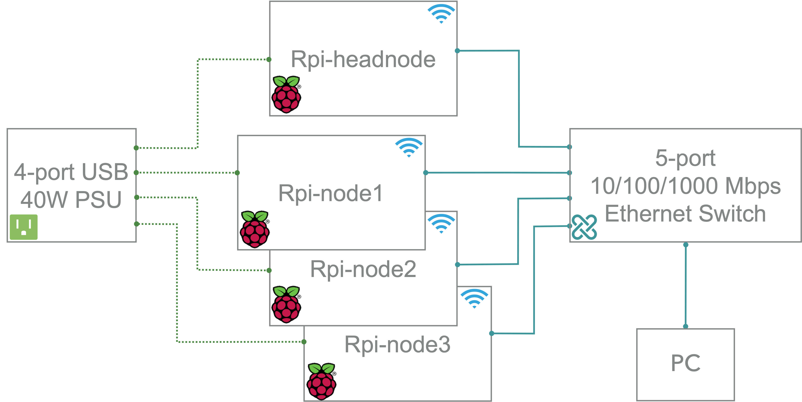
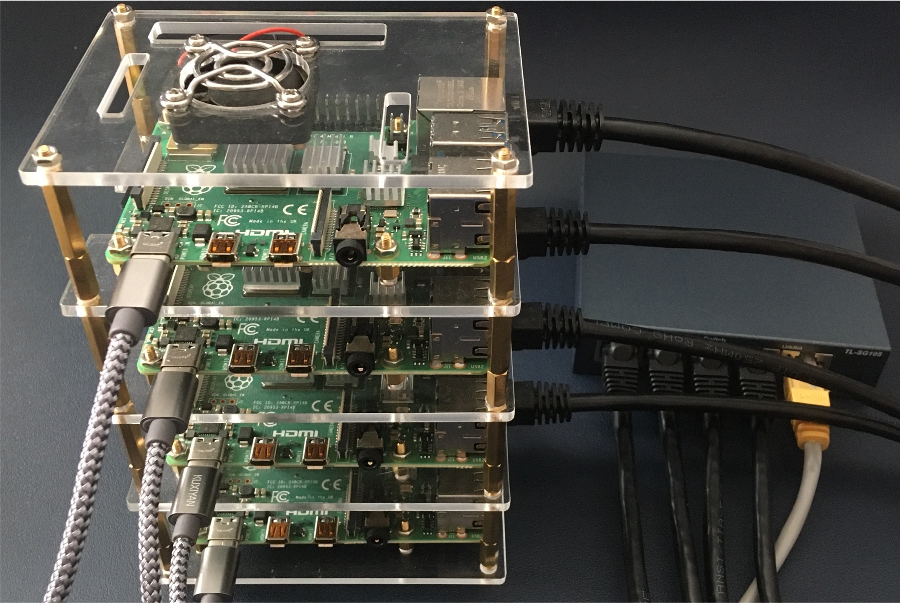
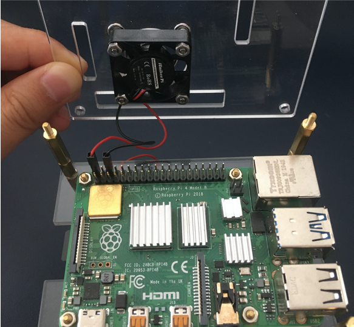

Build a Raspberry Pi Cluster
How to build a cluster with Raspberry Pi.
Background
Building a cluster with Raspberry Pi is a good way to learn about cluster computing and distributed systems. It is also a good way to learn about Linux and networking. In this post, I will show you how to build a cluster with Raspberry Pi.
The hardware we need is listed below:
- Four Raspberry Pi 4 B boards
- Four 64GB MicroSD cards, one for each board
- Cables: four Ethernet cables, four MicroUSB cables, one Micro HDMI cable
- One 40W 8A 4-port USB Charging Station
- One 5-port switch
- One cluster rack that has coolers installed
Cluster assemble
Easy and self-explanatory. Lots of related videos on Youtube.
We’re going to access each node using wireless LAN and use Ethernet port for communication among nodes. Thus the switch does not have to be connected to internet.
The connection is shown below:

OS installation
We use CentOS in our cluster. To be noticed, the distribution for armv7hl platform is called “CentOS Userland Linux” and not “CentOS Linux”.
- For Raspberry Pi 4, we have a limited choice on what version of CentOS we can use. We choose CentOS-Userland-7-armv7hl-RaspberryPI-Minimal-4 for our cluster.
- Download the zip file and unzip it to iso image. Image all microSD cards with CentOS7 using Raspberry Pi Imager. The default root passward is centos.
Expand capacity
There is a /root/README file that describes how to expand the root partition to capacity of the MicroSD. On each node, follow the instructions to expand the root filesystem using: rootfs-expand
== CentOS 7 userland ==
If you want to automatically resize your / partition, just type the following (as root user):
rootfs-expand
Network configuration
Wifi
On each node, configure Wifi network with Network Manager Text User Interface(nmtui) tool.
Ethernet
There is no eth0 ifcfg files by default. We create a file named /etc/sysconfig/network-scripts/ifcfg-eth0 as follows:
DEVICE=eth0
BOOTPROTO=none
ONBOOT=yes
PREFIX=24
# IPADDR are 10.0.0.1, 10.0.0.2, 10.0.0.3, 10.0.0.4 for master, node1, node2, node3, respectively.
IPADDR=10.0.0.1
Restart network service: systemctl restart network
Brand new key
For the cluster to work, each worker node needs to be able to talk to the master node without needing a password to login. To do this, we use SSH keys. Run the following:
ssh-keygen -t rsa
This creates a unique digital “identity” (and key pairs) for the computer. You’ll be asked a few questions; just press RETURN for each one and do not create a passphrase when asked. Next, tell the master(10.0.0.1 in our setup) about the keys by running the following on every other node:
ssh-copy-id 10.0.0.1
Finally, do the same on the master node and copy its key to every other node in the cluster.
Setup NFS server
NFS stands for Network File System, helps you to share files and folders between Linux/Unix systems, developed by SUN Microsystems in 1990. NFS enables you to mount a remote share locally.
Install NFS server
Install the below package for NFS server using the yum command.
yum install -y nfs-utils
Once the packages are installed, enable and start NFS services.
systemctl start nfs-server rpcbind
systemctl enable nfs-server rpcbind
Create NFS share
Create a directory to share with the NFS client. We will create a new directory named nfs in the / partition.
mkdir /nfs
Allow NFS client to read and write to the created directory.
chmod 777 /nfs/
We have to modify /etc/exports file to make an entry of directory /nfs that you want to share.
vi /etc/exports
Create a NFS share:
/nfs 10.0.0.2/4(rw,sync,no_root_squash,no_subtree_check)
10.0.0.2/4 defines the range of client IP addresses.
Export the shared directories using the following command.
exportfs -r
Configure firewall
We need to configure the firewall on the NFS server to allow NFS client to access the NFS share. Run the following commands on the NFS server(master, 10.0.0.1)
firewall-cmd --permanent --add-service mountd
firewall-cmd --permanent --add-service rpc-bind
firewall-cmd --permanent --add-service nfs
firewall-cmd --reload
Install NFS client
We need to install NFS packages on NFS client(10.0.0.2, 10.0.0.3, 10.0.0.4) to mount a remote NFS share. Install NFS packages using below command.
yum install -y nfs-utils
Check the NFS shares available on the NFS server by running the following command on the NFS client.
showmount -e 10.0.0.1
Mount NFS share
Create a directory on NFS client to mount the NFS share /nfs which we have created in the NFS server.
mkdir /nfs
Use blow command to mount a NFS share /nfs from NFS server 10.0.0.1 in /nfs on NFS client.
mount 10.0.0.1:/nfs /nfs
You can use the df -hT command to check the mounted NFS share.
Create a file on the mounted directory to verify the read and write access on NFS share.
touch /nfs/test
If other nodes can see the test file, you have working NFS setup.
Automount NFS shares.
To mount the shares automatically on every reboot, you would need to modify /etc/fstab file of your NFS clients.
vi /etc/fstab
Add an entry at the end of the file:
10.0.0.1:/nfs /nfs nfs auto,noatime,nolock,bg,nfsvers=3,intr,tcp,actimeo=1800 0 0
Save and close the file.
Reboot the client machine and check whether the share is automatically mounted or not.
If you want to unmount that shared directory from your NFS client, you can unmount that particular directory using umount command.
umount /nfs
The Raspberry Pi Cluster


Jie Li
Ph.D. candidate in Computer Science
My research interests include High-Performance Computing, Advanced Computer Architecture, and Parallel and Distributed Computing.